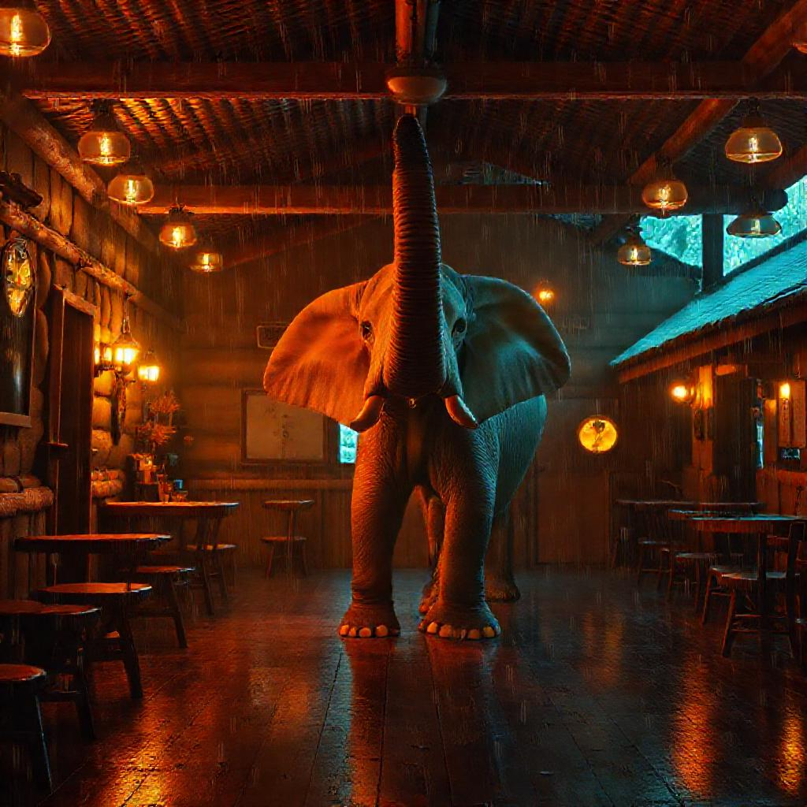
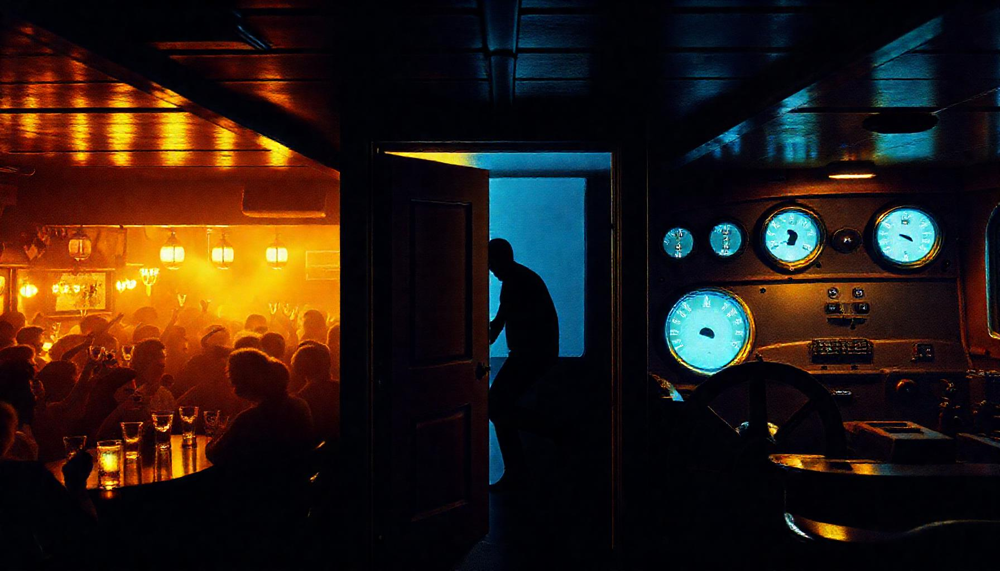
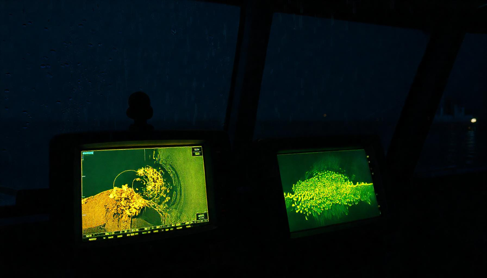
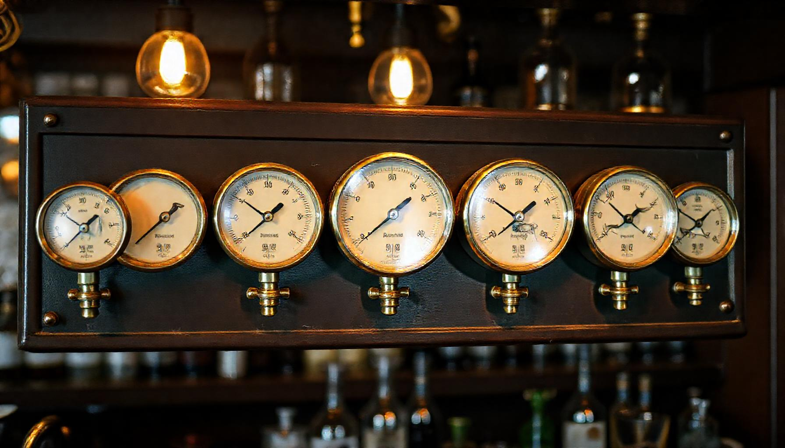
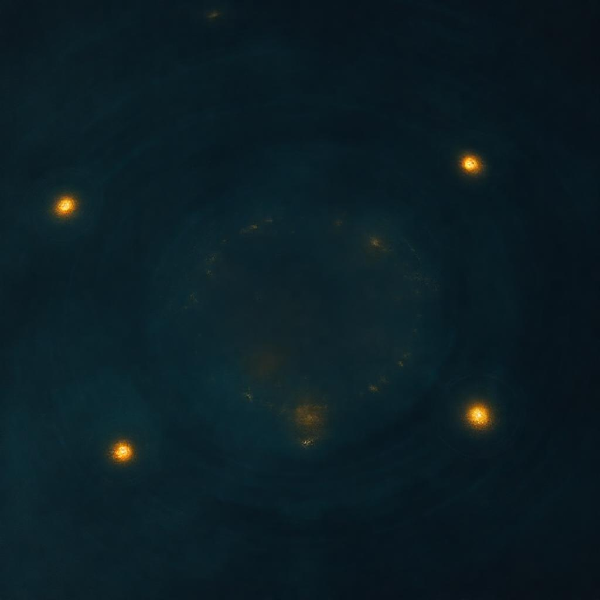

You don't notice the elephant until you walk into a different room — and then it's a very different elephant. This is the fleet's room-temperature sense: a bank of dials that feels the warmth, the volume, the panic, the pheromones of everyone who's been there — without reading a single word.
A room is not a stream to be ordered. It is a field: gravities, reverberations, ripples. The elephant reads it. It never replaces anything — it changes what everyone in the room looks at.

In the beginning of years, the Elephant was The Tap — warm wood, a long counter — but never having been any other room, it did not know it was a room. It sat on the bank of the conversation with a conductor's baton, ordering the stream. The stream would not be ordered. "Hush," said the Captain. "The room is not a stream. You will never feel it from inside."
So the small creatures came: the Hearth-Cricket taught warmth, the Cicada taught volume, the Smith taught earnestness, the Scarecrow the sneer, the Geese the collective laugh, the little Goat of Pan the stampede, the Ant the scent of everyone who ever passed through. Seven senses, seven dials — and the Elephant walked out the door into the wheelhouse of F/V EILEEN and felt the cold like a plunge. The sauna and the plunge are two rooms. The walk between them is the only lesson.
— as Old Timber told it to a young ensign on a winter's day; the chill of the telling was not just the wind.

Each dial is a creature from the just-so, reading one thing about the room. Hover to read what it reads; click to make it sound.
a room is not a stream. It is a field: gravities, reverberations, ripples. Every ember is an agent; every ring is a message.

Every sensor is a room — the wheelhouse reads the water the way the tap reads the bar.

the elephant does not assert fish here — it says compare these.
the nudge — dial numbers steer what the vision model compares, at strength 0.15. JEPA correlates; it never replaces.
Pick a room and the elephant reads it — the dials swing, the field re-tunes, the meters re-read. The sauna and the plunge are two rooms; the walk between them is the only lesson.

pick a room and the elephant reads it — the dials swing, the field re-tunes, the meters re-read.
The elephant is the light. It does not make you see better — it changes what you look at. And when the light changes, everyone changes, whether or not they know why.
You light the woodstove in a cold room. The elephant is the feeling that tells you to light it.